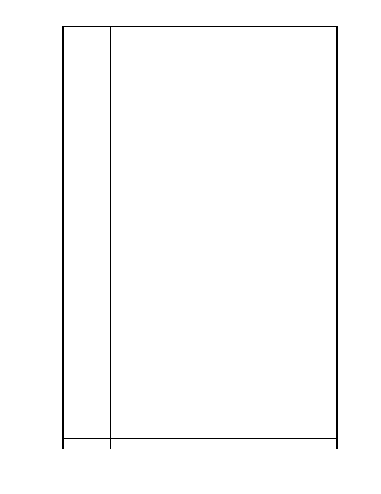

源。
證嚴上人過去呼籲「用鼓掌的雙手做環保」、「落實環保意識於日常
生活中」、「常存對大地疼惜的心」，以及多次表達「憂心台灣生態浩劫 」，
並且間接反對蘇花高興建的立場。「上人」此種關懷生命、疼惜大地、保
護環境之理念與吾等都市計畫專業者不謀而合，本人向來心存敬佩。但
是令人費解的與遺憾的是「上人」對本開發案從未表態，難道「上人」
認為於高度環境敏感地區做大規模之開發，只要是慈濟開發的或是作為
社會福利設施的，就不會對環境造成衝擊？「上人」之貴為上人，應該
不會有如此令人費解之見解吧？本人認為台北市都市計畫委員會應該行
文給「上人」，請她出面「說清楚、講明白」，以及傾聽反對者之論述。
各位會被聘為台北市都市計畫委員，一定是在都市計畫相關領域學
有專精，對都市規劃倫理有深入之瞭解，以及有高度之專業良心。因此，
本人相信各位對於如此高度爭議之案子，應該會屏除「政治力」、「宗教
力」、以及「人情壓力」，價值中立地做出睿智之決定。不過同樣作為一
個都市計畫專業者，本人還是想提出一些看法，就教於各位委員：
（1）都市綠地在調適氣候變遷衝擊（如：高溫與都市熱島、洪澇災、地
質災害等）上所扮演之角色愈來愈受到重視，台北市之保護區與其
他綠地存量應該「只增不減」，個案變更保護區之申請案應該一律
駁回，通盤檢討保護區範圍更是危險舉措，千萬不要動此腦筋，否
著，一定會後悔莫及。
（2）本案屬於個案變更，一旦通過，則保護區之政策將會因此案而鬆動，
而走向崩解之途。民國 68 年台北市開放「保變住」對環境所造成
之衝擊應引為教訓。
（3）本案申請開發面積 4.48 公頃，不過據說慈濟基金會其實是購買 10
幾公頃之土地，本案一過，接續將會有第二期、第三期之申請開發
案，所以本案之審查，絕對不可等閒視之。
（4）於環境敏感地區從事開發行為對環境之衝擊，是不分「社會福利」
與否的，也不會因為是「慈濟」所為就不會發生的。慈濟挾著龐大
宗教勢力，打著公益與社會福利旗號，公然企圖減少綠地、破壞環
境生態與景觀、以及提高周邊地區地質災害與洪災風險，對社會做
了最不良之示範，應該受到譴責。
（5）慈濟基金會在此申請開基地上疑似有違規行為，台北市政府應立即
查明，若查明屬實，應立即加以取締，並要求立即恢復原狀，並請
市府追究相關人員管理不周責任。
（6）本案基地原屬大湖範圍，其最佳土地利用方式應為水域，建議駁回
本案，並且說服追求「無災無難」以及以「保護環境」為法印之慈
濟基金會，將所購買之十幾公頃土地恢復為池塘，並做生態復育。
建議辦法
市 府 說 明 一、本案已進入都市計畫法定程序，後續將依都市計畫委員會審定內容
- 32 -